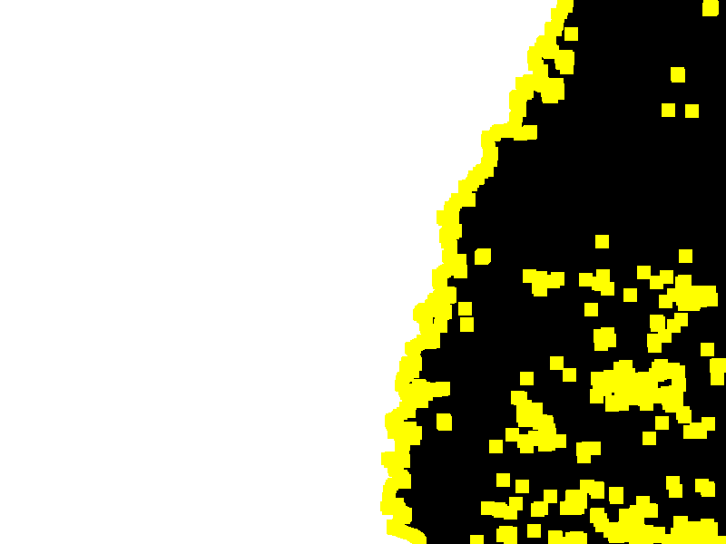
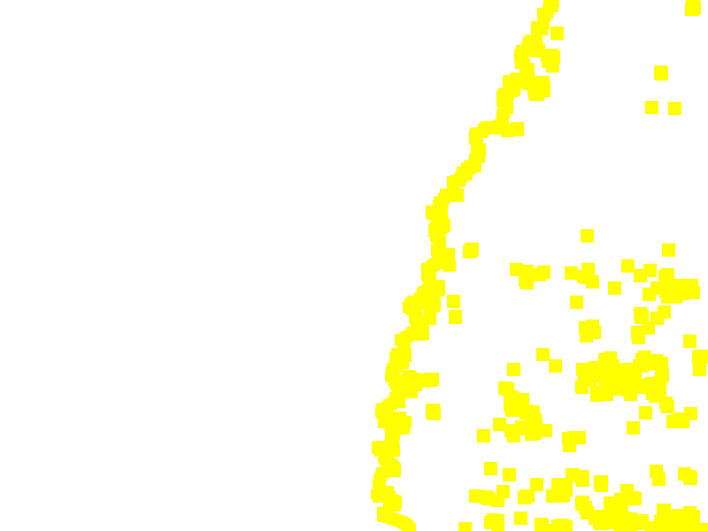
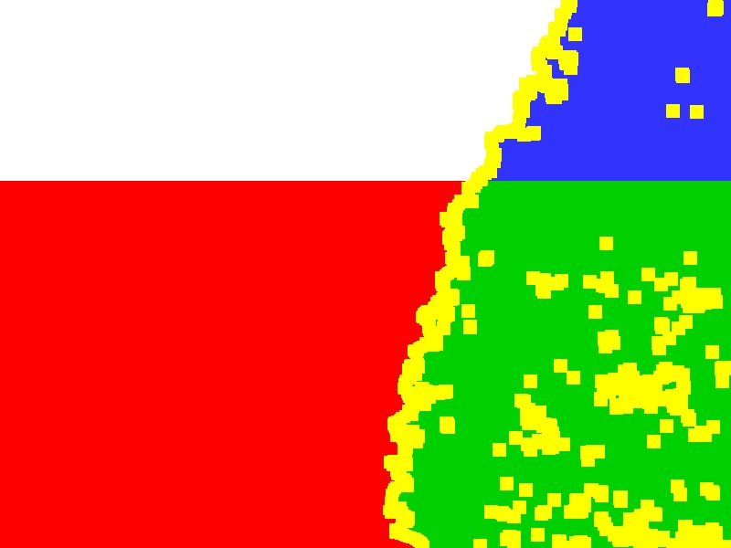

Colorized Reference Mask |

Original System Output Mask |

Binarized Reference Mask (Black = Manipulated, Yellow = Boundary No-Score Zone, Pink = Selective No-Score Zone, Purple = System Opt Out) |
Actual Binarized System Output Mask (Black = Manipulated, Threshold <= 200) |

No-Score Zone (Yellow = Boundary No-Score Zone, Pink = Selective No-Score Zone, Purple = System Opt Out) |

Evaluation Result Visualization |
- Optimum Threshold: 223
- Actual Threshold: 200
| Localization Metrics |
Optimum |
Actual |
| Nimble Mask Metric (NMM) |
-0.882 |
-0.875 |
| Matthews Correlation Coefficient (MCC) |
0.107 |
0.098 |
| Binary Weighted L1 Loss (BWL1) |
0.540 |
0.511 |
| Grayscale Weighted L1 Loss (GWL1) | 0.441 |
|---|
|
Total Pixels (N): 432414
| Confuson Measures |
OptimumPixelCount |
OptimumProportion |
ActualPixelCount |
ActualProportion |
| True Postives (TP: green) |
111171 |
0.257 |
99584 |
0.230 |
| False Postives (FP: red) |
206024 |
0.476 |
181828 |
0.420 |
| True Negatives (TN: white) |
87805 |
0.203 |
112001 |
0.259 |
| False Negatives (FN: blue) |
27414 |
0.063 |
39001 |
0.090 |
|
No-Score Measures
|
Pixels
|
Proportion
|
|
Boundary No-Score Zone (BNS: yellow):
|
47586
|
0.099
|
|
Selective No-Score Zone (SNS: pink):
|
0
|
0.000
|
|
System Opt Out No-Score Zone (PNS: purple):
|
0
|
0.000
|
|
Total No-Score Zone:
|
47586
|
0.099
|
|